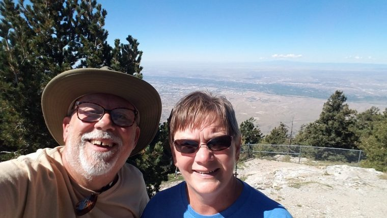
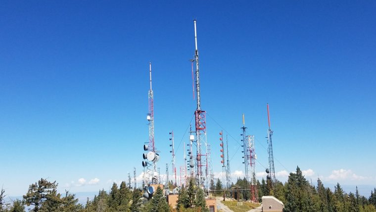
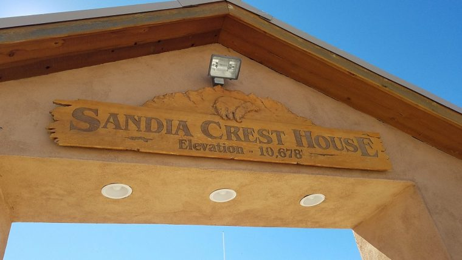
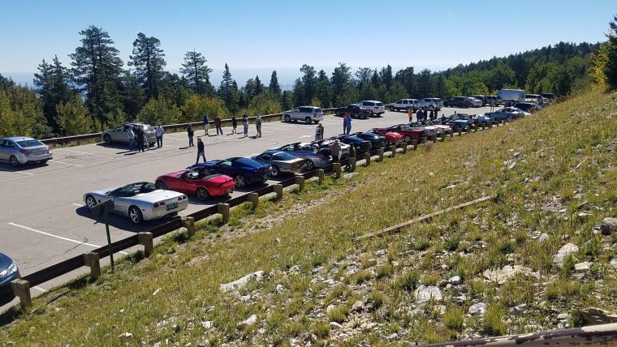

We’ve been traveling the country for about five years now and we “workamp” or volunteer as we go. We usually work 12-15 hours per person per week in exchange for our RV site and utilities. Sometimes we get a little extra too, maybe reduced cost at the park store or restaurant, free laundry or some other perk to help out with our monthly living expenses.
We’ve worked in commercial RV parks, public park campgrounds, museums, and fish hatcheries.
But we’ve never worked at a prison!
Our good friends Matt and Sherry had an interesting gig this past spring working (volunteering) at the Wyoming Territorial Prison State Historic Site at Laramie, Wyoming. They dressed in period costumes and portrayed what it was like to work at (or be incarcerated in) the prison back in “The Olden Days”.
Full-time RV’ers Sherry and Matt
Well, since we were passing through the area (always looking for places to go and things to see), we took a few hours while we were staying at Cheyenne Wyoming and drove to Laramie to visit the prison.
The prison was built in 1872 and for 30 years it held a lot of violent and notorious outlaws including Butch Cassidy. It originally sat on 640 acres and the main building is over 18,000 square feet.
The prison is one of only three federally constructed territorial penitentiaries that still exist and the only one that has most of it’s original structure still intact.
The rooms that have been restored and are open for viewing include; the intake processing room, Warden’s office, the kitchen, north cellblock, dining hall, guards quarters, watchtower, infirmary, women’s cellblock, the prison bathroom, and the laundry.
The Prison Industries Building (also known as the Broom Factory) was built in 1892 by convict labor and holds the original broom making equipment that the convicts used to make the brooms that were sold all over the United States as well as being shipped overseas.
The rear opening into the stockade
1st & 2nd floor cellblocks
The prison infirmary
On-site guards quarters
More cells in the other wing
A typical 2 man cell (concrete)
The mess hall
The broom factory
Finished brooms for sale
The front of the prison shows the stockade walls surrounding the rear yard
We found the venue really interesting to visit and just might like to work there ourselves in the future. Dressing up in period costumes and “playing the part” can be fun!
Thanks again for riding along and we hope to see you here again soon. In the meantime, be good to and for each other and you’ll be blessed back ten-fold.
Once we kind of found our way around the county (grocery store etc.), we decided to do a little more roaming within the park.
Today was a short hike up to Eagles Point. From here you can see a large portion of the lake, some of the islands (including trooper island), and on over to Tennessee.
Although the trail (from the Marina overflow parking lot) is only 7/10ths of a mile, much of it was uphill and my hip and knee were both crying out to me along the way. We heard a lot of little critters among the leaves in the woods as we climbed up to Eagle’s Point, but all we saw was a black snake along the way.
Once we got to the top, it became clear that the climb was worth the trip. We could see clearly (even though it was an overcast day) over to the lodge, to Troopers Island, and on across the lake to Tennessee.
Trooper Island is owned by the Army Corps of Engineers and leased by the Kentucky State Police where they operate a camp for underprivileged children. Find out more about their mission by following this link.
I’ve been afraid of heights ever since I can remember. A 6′ stepladder is about as high as I can comfortably go. Kathy on the other hand …. is comfortable going right to the edge (as you can see in one of the pictures below)
The trail climbing to the top
Kathy’s too close to the edge
Trooper Island
At the Eagle’s Point overlook
Click on any of the thumbnail images above to see a larger picturePanoramic view from the top (Trooper Island in the distance)
Video from the top
That’s it for now … we have very limited wifi here. I have to come up to the lodge to get any reliable wifi.
We are closing in on finishing up our 3rd year of living the full-time RV lifestyle.
The road has been a good one to us. Not that it’s been all fun, frolic, and laughs but it has brought us closer together – not only physically but emotionally as well.
Kathy and I just celebrated our 45th wedding anniversary with an Amtrak trip to Glacier National Park. During our lifetime together, a lot of that time was “alone” time. In one of my early career positions I was gone “on the road” nearly every weekday, sleeping in motels Sunday through Thursday nights somewhere in my multi-state territory.
Even when I was at home, my time was consumed with working on the “work” business from home involved in conference calls and drafting of sales proposal letters along with being active in the only real hobby I ever had … local ham radio clubs and events.
Me in my ham radio “shack” in the early ’80’s
Kathy had a handful of different jobs over the years (most importantly raising the kids and keeping the house together) with most of the time working in the school system so she could be off work and at home when the kids were at home. We were fortunate because with her job schedule we didn’t need to hire child care.
But now our lives are a polar opposite of that earlier time. We are together ALL THE TIME. We travel side by side, we share meals, we do the mundane tasks of grocery shopping, house cleaning and laundry together, and we sleep next to each other. I think we have both come to appreciate each other far more than earlier in our marriage. We’ve always had a lot of mutual love and respect for each other – rarely raising our voices to the other. But before … we had other things to occupy our time. If we felt the urge for some “space”, we could easily separate ourselves from the other. Now on the other hand – it’s not so easy. After all, we live in a 300 sf box with a little bit of green space around us.
Our three years together in our “Green Machine” Airstream motorhome has given us the luxury at this stage in our lives of … in a way … becoming one.
45 years and still “Livin’ & Lovin'”
When we started this lifestyle three years ago, we realized that in order to travel from place to place and enjoy the local life, we needed to have some assistance with the household budget. We sold our house, paid off what little remaining debt we had and decided we would live off our social security income and a small pension Kathy had from working at the school system. We decided we would keep the retirement nest egg (IRA’s, investments) alone for future use when (if) we get off the road. Oh sure, it’ll happen sometime. We will either run out of good health or run out of our love for the road, but by leaving our investments alone so they can continue to grow, at least we won’t HAVE to come off the road because we’ve run out of money.
Although I had no employer monthly pension income (I was self employed the last 20 years) we had purchased an annuity years ago that could now provide a supplement to our Social Security along with Kathy’s small pension.
Yes we could “make it” on those income sources alone, it was going to be tight. We’d have to always be scrutinizing the budget each month and we’d have little room if any for any emergency expense or extravagance.
Somewhere, somehow … we discovered Workamping/Hosting/Volunteering and the opportunities it can provide. These experiences have given us the opportunity to travel and have rent-free sites and utilities. In addition, these opportunities have given us something else that we never really expected … new and lasting friendships.
Workamping/Camp Hosting/Volunteering opportunities are generally long-term commitments. What I mean by that is that most often (but not always) your “employer” would like to have their “staff” on board for the season or even year-round.
Starting out, our first gig was 6 months long – the winter season in Arizona.
Although our owner/managers (George & Sigrid) were wonderful to us, treated us so well – like family … we ultimately decided when making arrangements for future opportunities we would look for more “short term” commitments. We’ve since been working one-month to 3-month gigs.
This way we can continue to travel around the country and have more new experiences and make more new and lasting friendships. If we worked for 6 months in each location, we’d be 130 years old and still not have completed our Bucket List!
Here’s a U.S. map showing where we’ve AT LEAST stayed overnight in the last three years. You can see we’ve still got a long way to go … we need to spend more time along both the east and west coasts.
Oh yeah, earlier I mentioned this part about friendships but then I got off track – excuse me. We have discovered that working (volunteering) as we travel allows us to meet, get to know, and build lasting relationships with lots of wonderful people from all over the country.
There are 10 couples here, all living in our rigs side-by-side in Volunteer Village at the Spearfish City Campground right across the street from the hatchery.
We work side-by-side, share most nights of the week around the campfire cooking smores and enjoying each other’s stories and even have monthly pot luck meals along with weekly free music festivals in the city park just a few hundred feet away.
One of our pot luck meals at Volunteer VillageBrooksie entertaining us with one of her stories while Matt prepares his SmoreEnjoying one of the weekly free “Canyon Accoustics” concertsSometimes it’s a smaller group out to share a meal together
When we have to say goodbye and hit the road again, we stay in touch with our new friends as we travel using both Facebook (groups) and a Facebook-like app made just for RV’ers called RVillage.com. Both of these are great resources to keep up with our buddies and see what their next adventure is and maybe where we might apply to work/volunteer in the future.
We’ve already had at least a dozen experiences over the last three years where we have volunteered with folks in say, Livingston Texas and met up with them again in Burlington Vermont or Ludington Michigan (or somewhere like that). Sometimes it’s planned, but more often it’s serendipitous!
But what about our family and “old” friends? Do we miss our kids and grandchildren? You bet! It would be great if we could do what we are doing AND fly back home to Ohio at least once or twice a year to spend time with the family. But, fact is we just can’t afford to that. Life is often about sacrifices (and opportunities!)
It really depends on where we are working and how long the commitment is and where the next commitment will be. We don’t plan our work locations based on traveling back home once or twice each year. We plan our work locations on where we have NOT been, what we might like to see, and how appealing the location and job description/compensation package is.
We were last in Ohio April of 2018 for a month and we will be back there summer of 2020 so we’ll have plenty of time to catch up. The photos below of the kids, grand-kids, in-laws and old neighbors might be a couple or a few years old, but they’re some of our favorites.
And of course, we post LOTS of info and pictures on Facebook, videos on You Tube and posts here on the blog for family and friends to see what we’re up to.
So yes, it’s great to travel the country and see all the great exciting new places, but we’ve found that the wonderful personal relationships we’ve developed with all our new friends as we travel and volunteer are the larger perk of the RV lifestyle that we embrace.
If you are interested in finding out more about our Workamping and volunteering experiences, just scroll on up to the top right hand side of this post and enter either “volunteer” or “workamp” in the search box and hit “enter”.
If you’re not already subscribed to this blog, you can easily do so by scrolling up to the top of any page and entering your email address in the block on the right side.
You can also subscribe to our YouTube channel (herbnkathyrv) on You Tube.
If you’re curious (at any time) to know where we are at that moment then click the button at the top right of this page labeled “See Where We Are Now“.
We’d love to hear from you. If you scroll all the way down to the bottom of this page, you can send us a note. Again, thanks for riding along. ’til next time – safe travels.
Fort Peck – It’s a small town (about 250 residents) and it’s an Army Corp of Engineers “Project” that includes a dam, a campground, an Interpretive Center, and multiple fishing/boating/hunting recreation areas.
Oh, and I almost forgot … the reason all of the above is here … the Fort Peck Reservoir. The reservoir (man made lake) was formed from the Missouri River, is 135 miles long and has over 1500 miles of shoreline. It was formed in the 30’s when 10,000+ men built the world’s largest earthen dam to provide flood control for lands downstream.
For now, we want to share with you a little about why we are here, how we came to find this job in particular, and take you on a tour of the park and show you some of our duties here.
Kathy and I are volunteers … well, kind of. We travel the country volunteering our time at campgrounds and RV parks in exchange for the rent and utilities on our site. We generally provide the park 12-15 hours a week and they give us a full hook-up (elec, water, sewer) site along with utilities. Sometimes we also receive; laundry money, free WiFi and cable TV hook-up, and discounts on purchases from the camp store or nearby attractions.
This arrangement offers us an opportunity to travel and see the country, meet all kinds of wonderful new people and experience new situations in all kinds of environments that we otherwise would not be able to see and do on our limited budget.
It offers the campground owner/operator free part-time employees for no cash outlay, only the loss of rental income for a couple RV sites that might often be vacant anyway. Another benefit: typically there is no employment contract or agreement to sign – only a handshake agreement. It’s called bartering. And it works well for us and the campground owner.
How we came to show up here ..
We knew that part of our “Bucket List” included a lot of the national parks and monuments out west, so we decided we’d search for jobs in that area.
Although we subscribe, either for a small annual fee or sometimes for free, to many of the Workamping web sites and have our resume’ published on a lot of them, there is also another great source for finding government related jobs and volunteer positions. I logged on to Volunteer.gov and followed the easy instructions to search for Campground Host (volunteer) positions available in Idaho, Montana, Wyoming, Utah, and Colorado. I filled out the online application and with just a few mouse clicks submitted our app to probably 40 or so parks in that five state area.
Within a week or two we started getting emails and phone calls from campground managers and rangers throughout the 5 state area. We chose to come to Fort Peck because we were already committed to South Dakota for July, August, and September and Ranger Scott here at Fort Peck was willing to work with our schedule. We left our leased RV lot in Casa Grande Arizona on April 1st and showed up at Fort Peck on April 15 just after the snow melted.
It’s been fascinating to learn about the local history. The town of Fort Peck was built by the corp to support the nearly 50,000 people that would come here to work on the building of the dam over the 10+ year period of 1930 to 1941. There were as many as 11,000 men working on the dam at any one time during that period and eight men lost their lives during “the Big Slide” of 1938 and are permanently entombed in the dam to this day.
To learn more about the dam building and how the town and local area and people from far and wide prospered during the depression, I encourage you to follow this link to visit the PBS web site with some great pictures from the era and a video about the building of the dam.
Our Camp Host Site on day one – April 15th The theatre operated 24/7 during construction of the dam with newsreels, movies and live plays to entertain the workers and their families and still offers summer plays to locals and visitors to the area.The Northeast Montana Veterans Memorial Park in the center of townThe world’s largest earthen dam, 4 miles long, 3/4 mile wide at the base, and 250′ tall. The Spillway located 3 miles east of the dam. Yes, that’s ice on the downstream sideThe Interpretive Center contains displays information on the dam, local paleontology, and local fish and wildlife along with an educational movie theatre
There was a T-Rex discovered here (now on display at the Smithsonian) with a full-size replica here in the Interpretive Center.
The Fort Peck T-Rex in the Interpretive Center
Here’s a video that gives a tour of the campground and some of the surrounding area along with a little bit of what we’ve been doing at the park these first couple of weeks.
10 minute video on the Downstream Campground – Fort Peck Montana
Thanks for riding along and visiting. We’re having fun and intend to keep posting to share a little of our time here. Please leave any comments below and be sure to subscribe to our You Tube channel so you always get the latest videos as soon as they are published. I usually try to make the videos available here via the blog as well.
Until next time, best wishes to you and yours from HerbnKathy
It’s March 18, 2019 and we are currently parked at the Pima County (Tucson, AZ) Fairgrounds with about 2000 other Escapee RV Club members enjoying the annual Escapade national gathering.
One of the evening entertainment sessions at 59th Escapade – Tucson, AZ
Since we “hit the road” and started our full-time RV lifestyle in late 2016, we had been Workamping our way around the country. We work at campgrounds or RV parks offering about 15-20 hours per week in exchange for rent-free living at the park and it typically includes all our utilities, cable TV, wifi, laundry and sometimes discounts at the park store or nearby attractions.
But being members of the Escapees RV Club, we were able to take advantage of getting on a “Wait List” for any of their parks. We put our names on the Wait List for the parks in; Wauchula FL, Hondo TX, Casa Grande AZ, Benson AZ, and Pahrump NV. We figured whichever park had our name at the top of the list first (waiting lists are often many years long), that’s the park we’d call “home” for the winter.
In addition to having a place to winter regularly, the “home base” would provide us a place to go at very little additional cost (only electric and propane) to be should we need a lengthy stay for say, recovery from a medical procedure – planned or otherwise.
As it turned out, we rose to the top of the list at Rover’s Roost in late 2017, accepted the lifetime lease agreement, continued our Workamping commitments for spring, summer, and fall of 2018, and then arrived here November 1st to be “on vacation” for the winter months.
We’ve spent a very relaxing and enjoyable winter at our leased lot at the Escapees Rover’s Roost RV Park in Casa Grande, AZ. I’ll share more with you in later posts about our time here at “The Roost” both having fun with our new friends along with some of the projects we’ve completed to our “home on the road”.
Our winter home at Rover’s Roost RV Park at Casa Grande, AZ
But now it’s early spring and it’s time to leave “The Roost” for the summer season (it gets WAY too hot here) and head north to cooler climates.
This year, we are heading to Montana to work at an Army Corp of Engineers campground as Park Hosts. We’ll be at Ft. Peck Dam Downstream Campground for 3 months (April, May, and June) and then we will move a little east to our next Workamping commitment at DC Booth Historic Fish Hatchery in Spearfish South Dakota working as visitor center and museum employees. We’ll be there July, August, and September.
Here’s a map of our trip north next month. This is subject to change as we have over 120 places on our Bucket List and we’ll try to hit many of them along the way, even if it takes us off track a hundred miles or so. We’re not in any big hurry to get north, we’ll hopefully just follow the spring thaw!
If you’d like to check up on us as we travel and see where we are at any given moment in time, you can just go to www.aprs.fi and type my ham radio license number WB8BHK-9 into the Search box and it’ll return a Google map with our exact location at that moment. We’d love for you to follow along!
I admit I’ve been a bit lax the last few months and haven’t posted blog entries as often as I would have liked to. I’ll work to improve my postings as we travel north and we appreciate you following along.
Oh, by the way …. we’ve designed a new logo to market our brand. Whatta ‘ya think?
While we worked at the Albuquerque International Balloon Fiesta (AIBF) in the fall of 2018, we were able to take some time to see some of the local sights.
We took a drive up to Sandia Crest (that we could see from where our coach was parked).
The view looking east to Sandia Peak from our initial parking area at AIBF. This is a shot just before sunset casting the “Watermelon Glow” on the mountain range
The drive along the winding curvy road along the edge of the mountain to the peak (crest) at 10,760 feet came to a dead end where there was ample parking area, a coffee and gift shop, and a forest of cell and radio towers.

Kathy and I at the peak, over our shoulders is the AIBF field below to the west

Cell towers, broadcast station antennas and government radio station antennas at the peak adjacent to the parking area

The Crest House – now home to a cafe, coffee bar, and gift shop

Just so happened to be a sports car rally at the peak the day we were there
Now the trip to the peak and the view from the top was great … ooh I forgot to mention … we were there with our new good friends from Wild Rose, Wisconsin … Bill and Jackie. We really enjoyed their company and their friendship while in ABQ and we look forward to seeing them again yet this winter in Arizona – perhaps while we are in Quartzite for the “Big Tent” RV Show.
On our way back down from the peak, we were told by others that we just had to stop and check out Tinkertown. And are we glad we did. You can drive right by it if you’re not careful. There’s one small hand painted sign along the road side “Tinkertown 500′ ahead” and if you’re not really looking for it, you’ll zip on by.
Tinkertown is one of those places that some like to call “eclectic with a touch of whimsy” – I think it’s really eclectic with a boatload of whimsy.
So what is Tinkertown? Well, this clip from their web site says it best;
“It took Ross Ward over 40 years to carve, collect, and lovingly construct what is now Tinkertown Museum. His miniature wood-carved figures were first part of a traveling exhibit, driven to county fairs and carnivals in the 1960s and ’70s. Today over 50,000 glass bottles form rambling walls that surround a 22-room museum. Wagon wheels, old fashioned store fronts, and wacky western memorabilia make Tinkertown’s exterior as much as a museum as the wonders within.
Inside, the magic of animation takes over. The inhabitants of a raucous little western town animate to hilarious life. Under the big top, diminutive circus performers challenge tigers and defy gravity while the Fat Lady fans herself and a polar bear teeters and totters.
Throughout, eccentric collections of Americana (wedding cake couples, antique tools, bullet pencils and much, much more) fill Tinkertown’s winding hallways. Otto the one-man-band and Esmerelda, the Fortune Teller, need only a quarter to play a tune or predict your future. Through a doorway and across a ramp waits a big-sized surprise: a 35′ antique wooden sailboat that braved a 10 year voyage around the world.”
Here are some pictures that I took as we traveled through the “museum” constantly fascinated by not only the craftsmanship of Ross Ward, but the imagination he must’ve had to come up with all this. Absolutely amazing. Read on.
As always, you can click on any of the individual pictures to see a larger image. And be sure to click on the images of the sailboat the “Theodora R” and the map on the wall of the 10,000 mile voyage – fascinating.
Thinking about your next summer’s Workamping gig? Don’t rule out northwest Michigan. With all the inland lakes and streams, as well as the Great Lakes, Michigan truly is the Water Wonderland of the country.
So much to see and do in Michigan and with this job you have every other week off (that’s seven days straight) and you typically only work about 3-4 hours the days you are on duty.
Check out the video and comment below with any questions you might have or email me at herbsells@gmail.com
We are wrapping up our Workamping experience at the Escapees RV Club park known as “Rainbow’s End.
This was the first park built in the system back in the late ’70’s. There were a handful of die-hard full-time RV’ers that donated their time and their talents to build this park.
This is also the home of the clubs National Headquarters and mail service that serves nearly 10,000 members and handles 25,000 pieces of mail daily.
We arrived October 15, 2017 and Kathy has been working in the office 8 hrs/week checking in new arrivals and taking reservations on the phone. I’ve been working 12 hrs/week outside maintaining the grounds and the buildings.
In exchange for the combined 20 hrs/week we receive a free full hook-up site and utilities. Laundry allowance is not provided.
Here’s a 6 minute video that I put together showing some of the amenities of the park and what the workampers get involved in during a typical week.
I’m also learning to use a new video editing software, so please bear with me and some of the features I’ve been experimenting with like; titles, transitions, voice-overs, fade-in and fade-out, and music.
Please remember to SUBSCRIBE to our You Tube channel by clicking on the icon in the lower right corner, and if you’d give the video a “thumbs up” too, that’d be wonderful.
Thanks for riding along with us and we look forward to the time we can meet up down the road.
Although we’re currently in Livingston, TX … we’re heading out Jan 14th for Florida for the month of February, then back to TX the last couple weeks of March, then (through Ohio) and up to Baldwin, Michigan for our summer workamping job, and in the fall of ’18 we’ll be in Albuquerque, NM working at the International Balloon Fiesta for a few weeks before we head to our winter home at Casa Grande, Arizona.
Are you a current RV’er? Do you travel pulling a travel trailer or 5th wheel trailer? Or do you drive a motorhome and pull a car or truck behind?
We’ve had a fifth wheel trailer in the past and this is our 2nd motorhome. We enjoy the freedom that the motorhome gives us, along with the ease of parking when it comes to our evening camping spot.
We’ve owned this Airstream motorhome for about two years now and although we’ve looked at other rigs out there – both newer and older along with bigger and smaller … we think this 2002 36′ coach is just right for the two of us and our full-time RV travels.
I made this video of the exterior of our coach to give others who might not be aware of some of the features of many class A motorhomes an idea of what to expect. For those of you who might currently own a motorhome, it might be interesting for you to see some of the differences between ours and what you currently own.
Although there are a lot of similarites from manufacturer to manufacturer and model to model, there are also a lot of differences and this video just points out some of the features of our 2002 Airstream 365 XC Diesel Pusher motorhome.
I hope you enjoy seeing our coach and what it has to offer. I’ll be publishing a companion video that will feature the interior and further explain some of the inside systems.
In the meantime, we just completed our interior remodel (paint, light & bath fixtures, etc) and you can see that video by following this link
We’re coming to the end of our first year as full-time RV’ers and Kathy and I have taken stock of the decision we made to leave the stix-n-bricks world of home ownership and hit the road as Workampers.
We left our family and friends back in Ohio on Labor Day 2016 and headed west to Arizona for our first Workamping experience. This position was for Sept 15th to March 15th, 2017. I’ve written many posts about our experiences while working in Arizona, you can find them elsewhere on this blog. Here’s a link to a post on our workamping experience there.
We had a great time and made some great new friendships there and we’d like to go back to Arizona again in the near future. If you’re contemplating visiting Arizona, we highly recommend the central portion of the state near cities like Cottonwood, Camp Verde, Clarkdale, Sedona, & Jerome.
Central Arizona – Not too hot in the summer, not too cold in the winter
These spots are far enough north of Phoenix to be a little cooler and less looking like desert, but in the winter you’re far enough south of cities like Flagstaff so the chances of snow are pretty slim.
This video below takes you on a bicycle tour of the park. It’s a beautiful lush green RV park full of towering oak trees, an in-ground heated pool, hot tub, picnic pavilion, laundry room, and club house.
We don’t have to park new arrivals, answer the phone, or take reservations. There is a rental manager for that. Kathy and I are responsible for maintaining the rest rooms, showers, pool, hot tub, club house and laundry areas.
Take the tour and find out a little more.
Although it’s only been a year, we’ve come to realize that we are really enjoying this lifestyle change. We have sold our home in Ohio (to our daughter and son-in-law), and will be registering as Texas residents this winter when we are there for our next (winter) workamping position. Texas is viewed by “those in the know” as one of the 3 best states to domicile in for full-time RV’ers.
We hope to continue this lifestyle as long as our health allows and recommend to anyone considering some sort of lifestyle change to think about hitting the road in an RV and workamping along the way, both to help keep active and contribute to the household budget. We look for employers/positions that ask for about 10-20 hours per week in exchange for a full hook-up site along with water, sewer, electric, cable, wifi, and laundry allowance. We don’t want to work 40 hours+, we’ve been there / done that.
Thanks for reading … don’t be afraid to ask questions …we’d love to hear from you.


{kind=link}
{kind=link}
{kind=link}
{kind=link}
{kind=link}
{kind=link}
{kind=link}
{kind=link}
{kind=link}
{kind=link}
{kind=link}
{kind=link}
{kind=link}
{kind=link}
{kind=link}
{kind=link}
{kind=link}
{kind=link}
{kind=link}
{kind=link}
{kind=link}
{kind=link}
{kind=link}
{kind=link}
{kind=link}
{kind=link}
{kind=link}
{kind=link}
{kind=link}
{kind=link}
{kind=link}
{kind=link}
{kind=link}
{kind=link}
{kind=link}